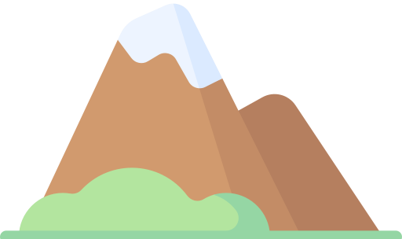

I'm Nabilah.
a programmar.

Once a medical doctor with interest in psychiatry, I now design and develop for fulfilment! Programmar with an increased propensity for semantic satiation and existential crises.

My vocation is developing; my avocation is designing. While we all cherish functioning things, I relish the endeavour of making them pain-free and pleasing to the senses.
Coding got you blue? Need code-iac resuscitation STAT? Here I am - tea and cookies optional!
Would you like to know more about web development? Perhaps you need a listening ear. Never fear, your safe space is here!
Contact Me